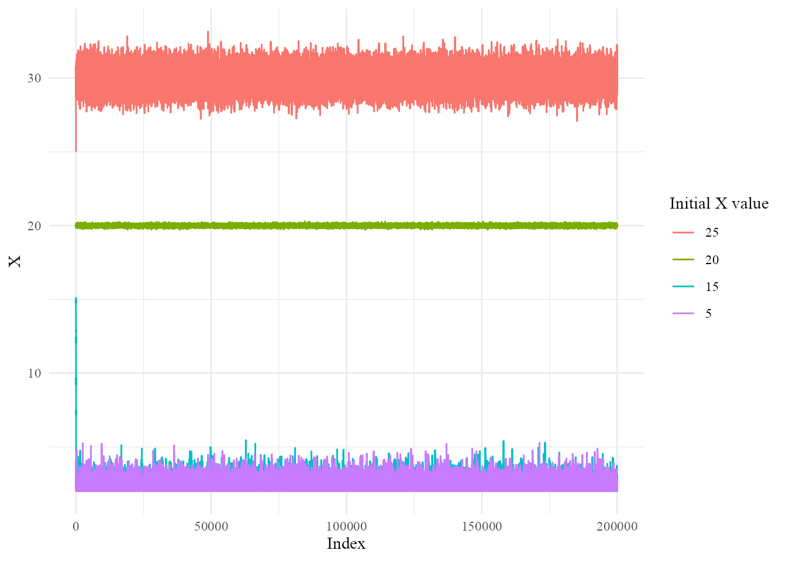
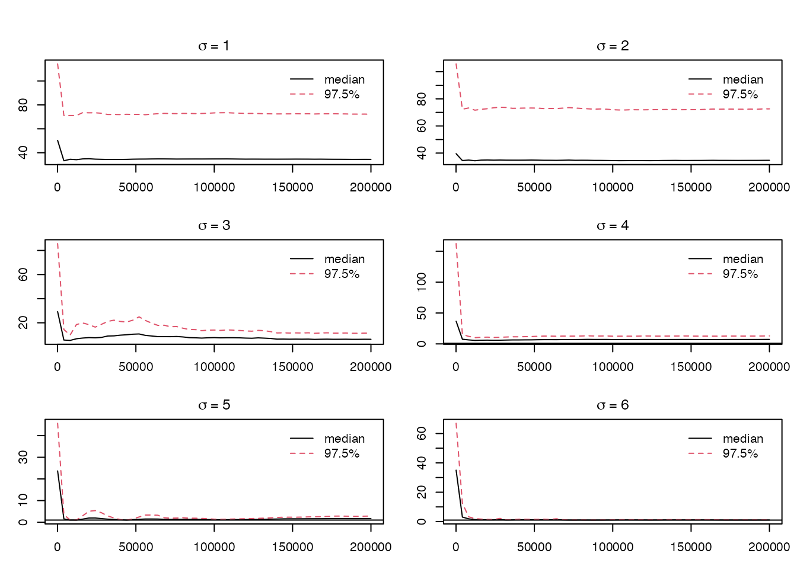
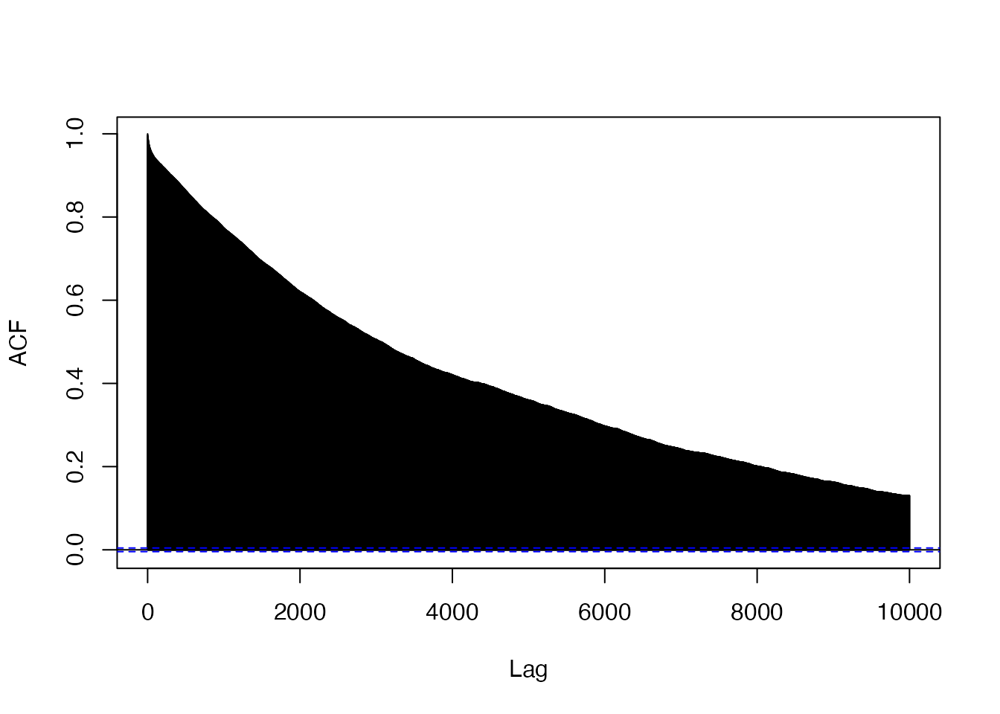
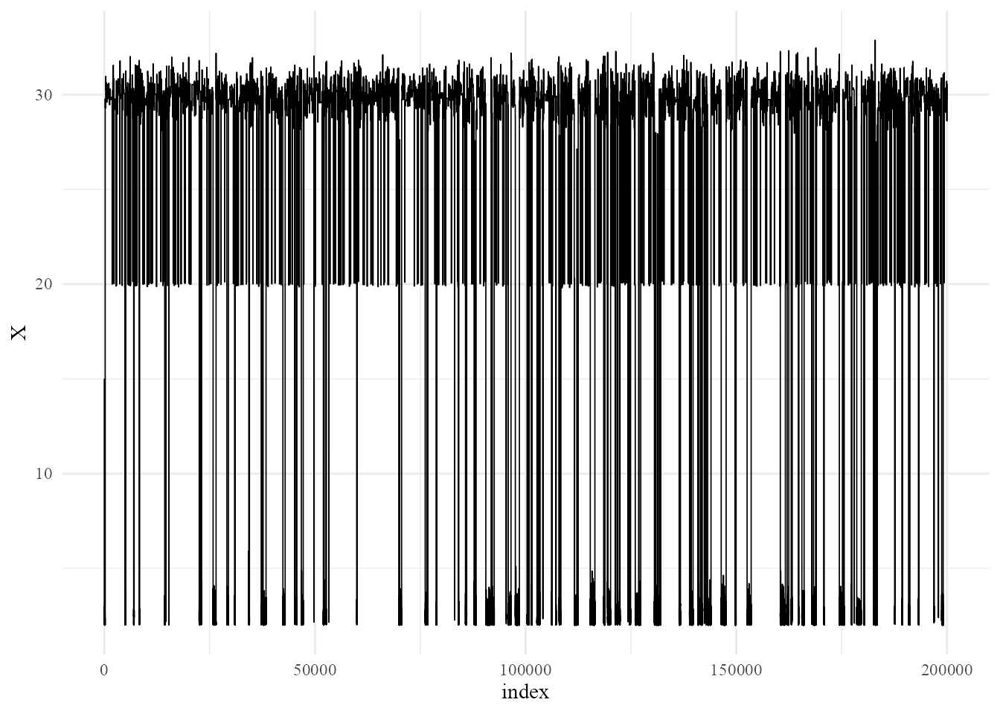
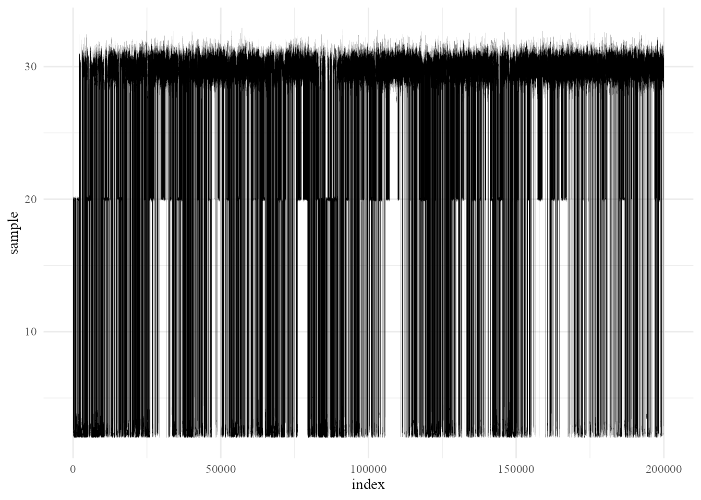
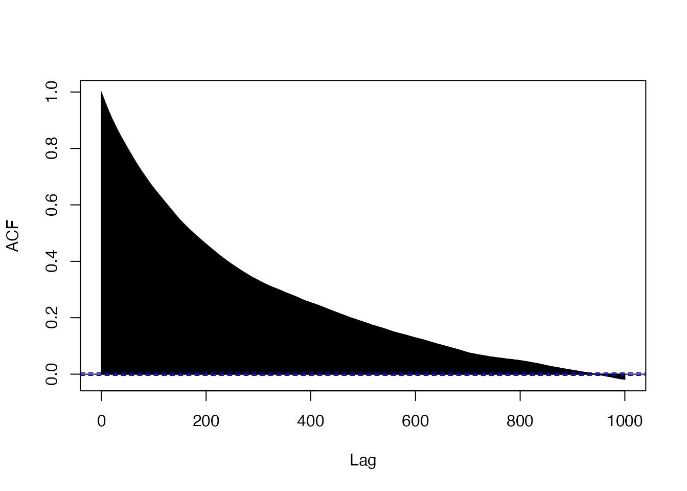
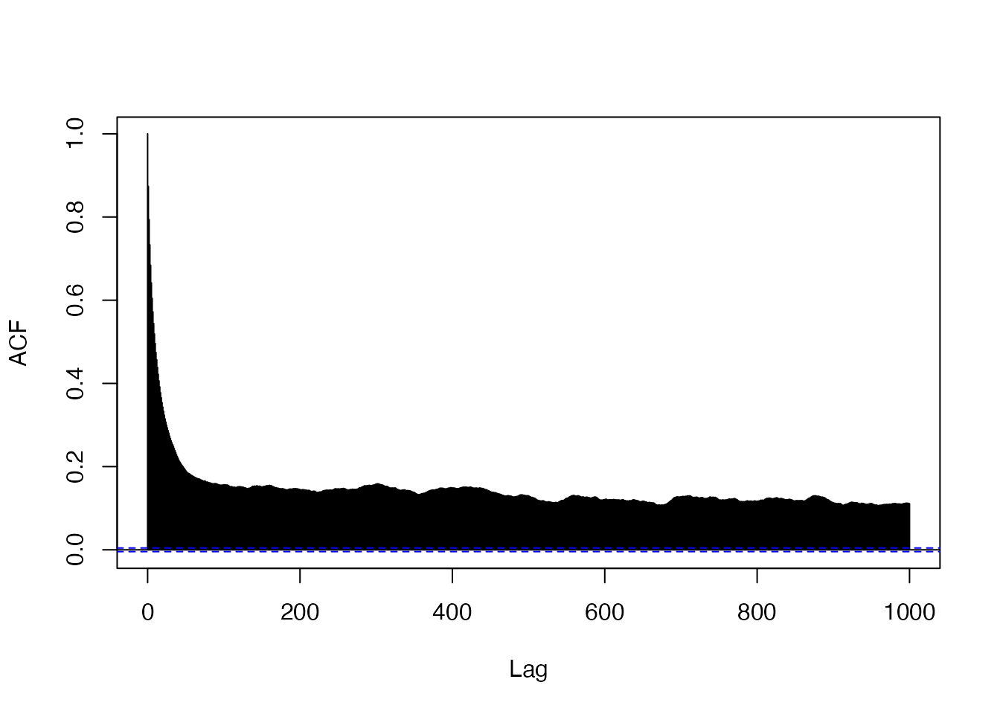
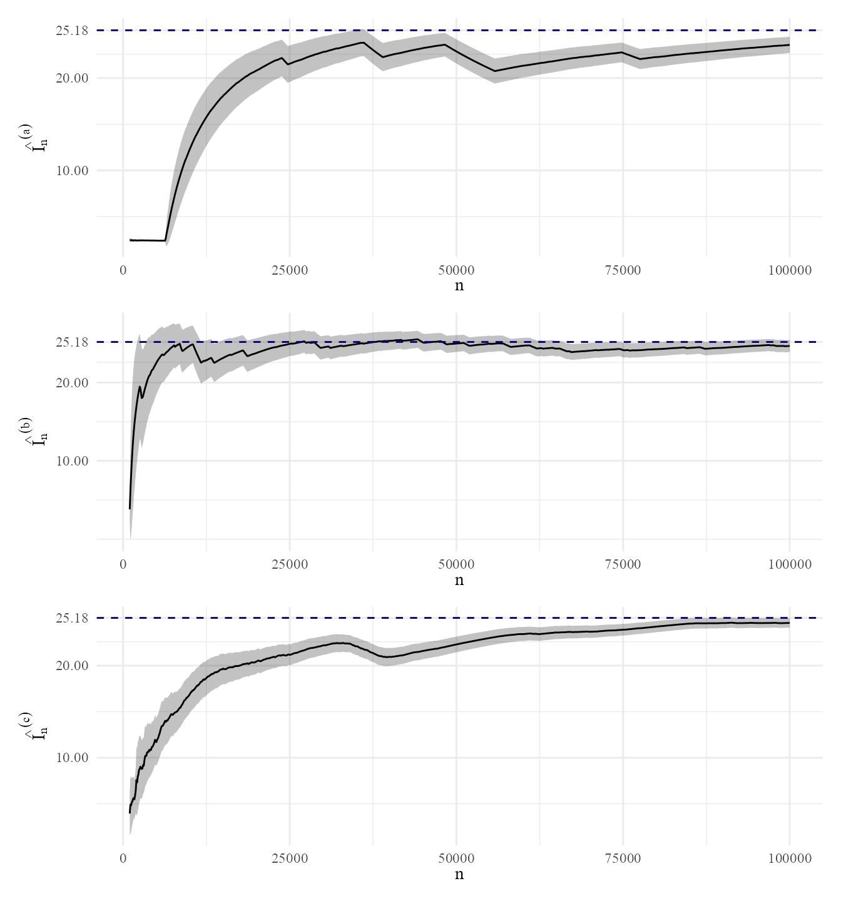

MCMC Sampling from a Multimodal Density
Abstract
In this report, I build MCMC samplers to approximate a multimodal density. I use a simple Random Walk Metropolis-Hastings (RWMH) algorithm, a variable-transformed RWMH algorithm, and a parallel tempering algorithm. The efficacy of each method is compared, and the samplers are used to generate confidence intervals for the expectation of a random variable with the given density.
Let \(f(x) = k(\exp[-3(x-2)]+\exp[-(x-30)^2]+\exp[-(x-20)^2/0.01])\mathbf{1}_{\{x\geq 2\}}\) be the target density with normalising constant \(k >0\) and support \(x\geq 2\).
Random Walk Metropolis-Hastings
First, I will sample from the target distribution using random walk Metropolis-Hastings (RWMH) with random noise \(\xi\sim \mathcal{N}(0,\sigma^2)\). The target density is clearly multimodal, with modes at \(x=2,20,30\). This means that small \(\sigma\) will result in the the Markov chain failing to explore the entirety of the distribution, as it will gravitate towards the nearest mode from the initial chain value \(X_0\). Furthermore, the scaling factor of \(1/0.01\) for the mode at \(X = 20\) causes that mode to be a less ``weighty” attractor for the chain than the other modes. For a demonstration of these phenomena, see Figure 1, which generates \(n=200,000\) samples with the random noise’s standard deviation set to \(\sigma=0.5\). Disregarding initial burn-in, the starting value of \(X\) determines the mode around which the chain explores. Furthermore, it is clear that the scaling factor of the mode at \(X=20\) greatly weakens its influence on the likelihood, as shown by the starting value \(X_0=15\) travelling to the mode at \(X=2\) instead of \(X=20\).
This is clearly an issue. To create an effective sampler, the Markov chain must explore the all parts of the distribution, regardless of the initial value. In a multimodal target density such as this, that equates to mixing (or, convergence to the full stationary distribution), which is not present when \(\sigma=0.5\).
To evaluate the sampler’s convergence to the stationary distribution I use the Gelman and Rubin diagnostic, \(\hat R\), with 6 independent chains (i.e., twice the number of modes). Since \(\sigma=0.5\) clearly was too small a standard deviation to allow full exploration, I repeated the process of creating chains and evaluating their \(\hat R\) for integer values of \(\sigma\geq 1\) until the sampler seemed suitably near convergence. To generate \(\hat R\), multiple chains are needed; I constructed 6 chains with start values \(\mathbf{X_0}=(2,20,30,2,20,30)\) for each value of \(\sigma\). The diagnostic plots are shown in Figure 2. From these iterations we can see that the distribution certainly converges when \(\sigma=6\) (for some seeds it will converge for smaller \(\sigma\), but this is not generalisable). To avoid unnecessary increased variance, I do not consider random walk samplers for values of \(\sigma > 6\).

However, such a high variance comes at a cost: the mixing is very slow due to the high autocorrelation of the samples. As shown in Figure 3, it takes a lag several thousand samples for the autocorrelation to reach 0, which is a sizeable percentage of the number of generated samples. Thus, even though we have a sampler that converges to the stationary distribution, its mixing quality is exceptionally poor.

Random Walk Metropolis-Hastings with a Variable Transformation
The support of \(f(x)\) is \([2,\infty)\), but the random walk Metropolis-Hastings algorithm detailed above can propose values less than 2. Thus, to only propose values within the support of the target density, we need to apply variable transformation. I chose the transformation \(y =h^{-1}(x)= \log (x-2)\), which is defined on \([2,\infty)\). This results in \(x=h(y)=e^y+2\), with \(|J_g(y)|=e^y\). Therefore, we may sample from \(g(y)\) instead, for \(g\) defined as: \[ g(y) = f(e^y+2)e^y=k'e^y(\exp[-3(e^y)]+\exp[-(e^y-28)^2]+\exp[-(e^y-18)^2/0.01]) \] where \(k'>0\) is an unknown normalisation constant.
We may implement a random walk Metropolis-Hastings sampler for \(g\) much the same way we did for \(f\), being sure to transform the sampled values at the end to return values of \(x\), not \(y\). The sampler also needs to take an input value in terms of \(y\), not \(x\). I chose a start value of \(Y_0=\log(13)\), equivalent to \(X_0=15\). I tested the algorithm for several values of \(\sigma\) to see its convergence and mixing quality, similarly to the investigation in part (a), before deciding on \(\sigma=2\), a much lower variance (and therefore faster mixing) but with similar convergence to \(\sigma=6\) in (a) above.

As shown in Figure 4, the variable-transformed random walk Metropolis-Hastings converges to the target distribution.
Parallel Tempering
We will now use a parallel tempering algorithm to sample from \(f\). The algorithm I implemented has the structure shown in alg. 1, where \(n\) is the number of iterations, \(\mathbf{T} = (T_1, T_2,\dots, T_M)\) is the vector of temperatures, \(\sigma = (\sigma_1,\sigma_2,\dots,\sigma_M)\) is the vector of standard deviations for each tempered chain, \(\mathbf{X_0}= (X_{0,1}, X_{0,2},\dots,X_{0,M})\) is the vector of initial values, and \(X_{i,j}\) denotes the \(i\)th sample of the \(j\)th tempered chain. I implemented the algorithm for \(n=200,000\) iterations on \(M=5\) chains with temperatures \(\mathbf{T} = (1, 5, 7, 10, 15)\), standard deviations \(\sigma = (0.5, 0.7, 0.8, 0.9, 1)\), and initial values \(\mathbf{X_0}=(15,15,15,15,15)\). The transition kernels used for the ``\(X\)-step” are \(N(X_{i-1,j}, \sigma_j^2)\), as stated in line 5 of alg. 1.
This algorithm will allow the chains to explore the distribution widely, while constraining the variance of the true sampling chain \(T_1\) to \(0.5\), greatly speeding up the mixing of the sampler. We see in Figure 5 that this increase in mixing quality does not come at the expense of convergence: the sampler is exploring the distribution fully and correctly.
Algorithm 1
Algorithm 1: Parallel Tempering Algorithm
| Procedure ParallelTempering(\(n, \mathbf{T}, \boldsymbol{\sigma}^{2}, \mathbf{X_0}\)) |
| for \(i = 1, 2, \dots, n\) do |
| Procedure X-Step() |
| for \(j = 1, 2, \dots, M\) do |
| generate \(Y \sim N(X_{i-1, j}, \sigma_{j}^2)\) |
| generate \(u \sim U([0,1])\) |
| if \(u \leq \left(\frac{f(Y)}{f(X_{i-1,j})}\right)^{\frac{1}{T_j}}\) then |
| \(X_{i,j} = Y\) |
| else |
| \(X_{i,j} = X_{i-1,j}\) |
| end if |
| end for |
| end procedure |
| Procedure Swap() |
| generate \(m =\) random integer on \([1, M - 1]\) |
| generate \(u' \sim U([0,1])\) |
| if \(u' \leq \frac{f(X_{i,m})^{1/T_{m+1}}f(X_{i,m+1})^{1/T_{m}}}{f(X_{i,m})^{1/T_m}f(X_{i,m+1})^{1/T_{m+1}}}\) then |
| exchange \(X_{i,m}\) and \(X_{i,m+1}\) |
| end if |
| end procedure |
| end for |
| end procedure |

Comparison of Algorithms
| RWMH | Variable-Transformed | Parallel Tempering | |
|---|---|---|---|
| ESS (raw) | 92.3961335 | 432.174053 | 3607.244938 |
| ESS (%) | 0.0461981 | 0.216087 | 1.803622 |
The algorithm in part (a) was able to reach convergence to the stationary distribution, but only with a very large variance in the random noise. This caused problematic levels of autocorrelation, indicating very slow mixing and thus poor mixing quality, as evidenced by its having the lowest effective sample size of the three algorithms (see Table 1). It is relatively computationally inexpensive, as it only requires one chain, but its low effective sample size means it would require a very high number of iterations to sample widely from the distribution.
The algorithm in part (b) was able to reach convergence at a lower, but still problematic, level of \(\sigma\). We see in Figure 6 (a) that the sample autocorrelation function only takes a lag of a few hundred observations (as opposed to a few thousand in Figure 3) to decay to 0, but this is still quite large. The effect of this slower decay rate can be seen in the sampler’s effective sample size, shown in Table 1. Overall, though the mixing quality is better than the sampler from part (a), it is still not exceptional. However, this algorithm is the least computationally expensive, as it only proposes samples that are in the support of \(f\), automatically leading to a larger effective sample size than the sampler in part (a), and thus requiring fewer iterations to converge.


Finally, the algorithm constructed in part (c) wins in terms of convergence and mixing quality. It is able to explore the entire distribution well, as shown in Figure 5. Furthermore, we can see in Figure 6 (b) that the autocorrelation times are largely reduced compared to the algorithms from (a) and (b). However, it should be noted that the autocorrelation function never fully approaches 0, but rather converges to a positive value quickly. Nevertheless, the parallel tempering algorithm still has mixing quality, corresponding to a much larger effective sample size, shown in Table 1. The downside of this algorithm is that it is by far the most computationally expensive, seeing as it requires 5 parallel chains instead of 1.
Confidence Intervals using MCMC Samplers
Let us now estimate \(\mathbb{E}(X)\) where \(X\) is a random variable with density \(f\). Let \(\hat I^{(a)}_n, \hat I^{(b)}_n, \hat I^{(c)}_n\) denote the estimate of \(\mathbb{E}(X)\) generated by the MCMC algorithms detailed in parts (a), (b), and (c), respectively, run for \(n\) iterations.
We would like to find 95% confidence intervals for each \(\hat I_n\), at varying values of \(n\). I generated confidence intervals for \(1,000\leq n\leq 100,000\), increasing \(n\) by \(100\) on each iteration. Thus, we have \(k=1000\) batches with a batch size of \(m=100\). We note that these confidence intervals take the form \[
\hat I_n \pm t_{1-\delta/2}\frac{s_m(n)}{\sqrt{n}} = \hat I_n \pm t_{0.975}\sqrt{\frac{\frac{1}{99}\sum_{k=1}^{1000}(\hat I_{k,n}-\hat I_n)^2}{1000}}
\] where \(\hat I_{k,n}=\frac{100}{n}\sum_{i=999n/100}^{1000n/100}X_i\) is the \(k\)th batch mean and \(t_{1-\delta/2}\) denotes the quantile of \(1-\delta/2\) of a Student’s \(t\)-distribution with \(m-1=99\) degrees of freedom. To generate the plots of these CIs for increasing \(n\), however, I did not calculate each upper and lower bound by hand. I used the mcse function from the mcmcse package and qt from base R. The results are included in Figure 7.

The plots in Figure 7 are somewhat dependent on seed, but their behaviour is generalisable. The RWMH algorithm only consistently approaches the true value of \(\mathbb E(X)\) for large \(n\), either over- or under-estimating this value beforehand. The variable-transformed and parallel tempering algorithms both converge near the true value of \(\mathbb E (X)\) for smaller \(n\). Between the latter two, the variable-transformed algorithm tends to converge faster than parallel tempering, but has wider confidence intervals. The parallel tempering has the smallest confidence intervals, but these do not always include the true value of \(\mathbb E(X)\). Thus, for confidence intervals, I would choose the variable-transformed algorithm over the other two.
Code Appendix
# Document setup
knitr::opts_chunk$set(
echo = FALSE,
collapse = TRUE,
comment = "#>",
dev = "ragg_png"
)
library(tidyverse)
library(kableExtra)
# Question 1
# part (a)
# target:
f <- function(x){
(exp(-3*(x-2)) + exp(-(x-30)^2) + exp(-(x-20)^2/.01)) * as.numeric(x>=2)
}
# random walk:
rwproposal <- function(n, sigma, X0){
Xres <- rep(NA, n)
X <- X0
for (i in 1:n){
Y <- X + rnorm(1, mean = 0, sd = sigma)
if (runif(1) <= f(Y)/f(X)){
X <- Y
}
Xres[i] <- X
}
return(Xres)
}
sample_size <- 2e5
X5 <- rwproposal(n = sample_size, sigma = 0.5, X0 = 5)
X15 <- rwproposal(n = sample_size, sigma = 0.5, X0 = 15)
X20 <- rwproposal(n = sample_size, sigma = 0.5, X0 = 20)
X25 <- rwproposal(n = sample_size, sigma = 0.5, X0 = 25)
Xvar <- data.frame(X5 = X5, X15 = X15, X20 = X20, X25 = X25,
index = 1:sample_size) %>%
pivot_longer(cols = starts_with("X"),
names_to = "startval",
names_prefix = "X",
values_to = "X") %>%
mutate(startval = fct_relevel(startval, c("25","20","15","5")))
ggplot(Xvar, aes(x = index, y = X, color = startval)) +
geom_line(linewidth = 0.5) +
theme_minimal() +
labs(x = "Index", y = "X", color = "Initial X value") +
theme(text = element_text(family = "Times New Roman"))
library(coda)
X0s <- c(2,20,30,2,20,30)
chains1 <- lapply(X0s,
function(x0) mcmc(rwproposal(n = sample_size, sigma = 1, X0 = x0)))
chains2 <- lapply(X0s,
function(x0) mcmc(rwproposal(n = sample_size, sigma = 2, X0 = x0)))
chains3 <- lapply(X0s,
function(x0) mcmc(rwproposal(n = sample_size, sigma = 3, X0 = x0)))
chains4 <- lapply(X0s,
function(x0) mcmc(rwproposal(n = sample_size, sigma = 4, X0 = x0)))
chains5 <- lapply(X0s,
function(x0) mcmc(rwproposal(n = sample_size, sigma = 5, X0 = x0)))
chains6 <- lapply(X0s,
function(x0) mcmc(rwproposal(n = sample_size, sigma = 6, X0 = x0)))
chains1 <- mcmc.list(chains1)
chains2 <- mcmc.list(chains2)
chains3 <- mcmc.list(chains3)
chains4 <- mcmc.list(chains4)
chains5 <- mcmc.list(chains5)
chains6 <- mcmc.list(chains6)
op <- par(no.readonly = TRUE)
par(mfrow = c(3, 2), mar = c(3, 3, 2, 1), oma = c(0, 0, 2, 0))
gelman.plot(chains1, auto.layout = FALSE, main = expression(sigma == 1))
gelman.plot(chains2, auto.layout = FALSE, main = expression(sigma == 2))
gelman.plot(chains3, auto.layout = FALSE, main = expression(sigma == 3))
gelman.plot(chains4, auto.layout = FALSE, main = expression(sigma == 4))
gelman.plot(chains5, auto.layout = FALSE, main = expression(sigma == 5))
gelman.plot(chains6, auto.layout = FALSE, main = expression(sigma == 6))
standard_mcmc_sample <- rwproposal(n = sample_size, sigma = 6, X0 = 15)
acf(standard_mcmc_sample, type = "correlation",
lag.max = 10000, main = "")
# part (b)
ftrans <- function(y) f(exp(y)+2)*exp(y)
# random walk:
rwtransform <- function(n, sigma, Y0){
Ysamp <- rep(NA, n+1)
Ysamp[1] <- Y0
Y <- Y0
for (i in 1:n){
Yproposal <- Y + rnorm(1, mean = 0, sd = sigma)
if (runif(1) <= ftrans(Yproposal)/ftrans(Y)){
Y <- Yproposal
}
Ysamp[i+1] <- Y
}
Xsamp <- 2 + exp(Ysamp)
return(Xsamp)
}
# results:
# need a starting Y value not X value!
xtransform <- rwtransform(sample_size, sigma = 2, Y0 = log(13))
trceplt <- data.frame(index = 1:length(xtransform),
X = xtransform)
ggplot(trceplt, aes(x = index, y = X)) +
geom_line(linewidth = 0.3) +
theme_minimal() +
theme(text = element_text(family = "Times New Roman"))
# part (c)
paralleltemp <- function(iterations, Ts, sigmas, X0) {
M <- length(Ts)
X <- matrix(nrow=iterations+1, ncol = M)
X[1,] <- X0
for (n in 1:iterations) {
# we are going to do a x-step; use log-domain for underflow issues
for (i in 1:M){
X[n+1, i] <- X[n, i]
Y <- rnorm(1, X[n,i], sigmas[i])
alpha <- exp((1/Ts[i])*(log(f(Y))-log(f(X[n,i]))))
if (!is.na(alpha) && runif(1) <= alpha){
X[n+1, i] <- Y
}
}
# we are going for a swap
m <- sample(1:(M-1), 1)
num <- (f(X[n+1,m])^(1/Ts[m+1])*f(X[n+1,m+1])^(1/Ts[m]))
denom <- (f(X[n+1,m])^(1/Ts[m])*f(X[n+1,m+1])^(1/Ts[m+1]))
# log1 <- (1/Ts[m+1])*log(f(X[n+1,m]))
if (runif(1) <= num/denom){
store <- X[n+1,m+1]
X[n+1,m+1] <- X[n+1,m]
X[n+1,m] <- store
}
}
return(X)
}
Ts <- c(1, 5, 7, 10, 15)
sigmas <- c(0.5,0.7,0.8,0.9,1)
X0s <- c(15,15,15,15,15)
samples <- paralleltemp(sample_size, Ts, sigmas, X0 = X0s)
parallel_sample <- data.frame(sample = samples[,1],
index = 1:length(samples[,1]))
ggplot(parallel_sample, aes(x = index, y = sample)) +
geom_line(linewidth = 0.02) +
theme_minimal() +
theme(text = element_text(family = "Times New Roman"))
ess <- data.frame(a = effectiveSize(mcmc(standard_mcmc_sample)),
b = effectiveSize(mcmc(xtransform)),
c = effectiveSize(mcmc(samples[,1]))) %>%
add_row(a = effectiveSize(mcmc(standard_mcmc_sample))/sample_size*100,
b = effectiveSize(mcmc(xtransform))/sample_size*100,
c = effectiveSize(mcmc(samples[,1]))/sample_size*100)
rownames(ess) <- c("ESS (raw)", "ESS (%)")
knitr::kable(ess,
col.names = c("RWMH",
"Variable-Transformed",
"Parallel Tempering"))
acf(xtransform, type = "correlation", lag.max = 1000, main = "")
acf(samples[,1], type = "correlation", lag.max = 1000, main = "")
library(mcmcse)
library(data.table)
a <- rwproposal(sample_size, sigma = 6, X0 = 15)
b <- rwtransform(sample_size, sigma = 2, Y0 = log(13))
c <- paralleltemp(sample_size, Ts, sigmas, X0s)[,1]
N <- seq(1000, 100000, by = 100)
confints_list <- vector("list", length = length(N))
for (j in seq_along(N)){
i <- N[j]
asamp <- a[1:i]
bsamp <- b[1:i]
csamp <- c[1:i]
ase <- mcse(asamp, size = 100)
bse <- mcse(bsamp, size = 100)
cse <- mcse(csamp, size = 100)
ta <- qt(0.975, df = 99)
tb <- qt(0.975, df = 99)
tc <- qt(0.975, df = 99)
df <- data.frame(n = rep(i, 3),
alg = c("a", "b", "c"),
lower = c(ase$est - ta*ase$se,
bse$est - tb*bse$se,
cse$est - tc*cse$se),
est = c(ase$est, bse$est, cse$est),
upper = c(ase$est + ta*ase$se,
bse$est + tb*bse$se,
cse$est + tc*cse$se))
confints_list[[j]] <- df
}
confints <- rbindlist(confints_list)
normalise <- integrate(function(x) f(x), lower = 2, upper = Inf)
expectation <- integrate(function(x) 1/normalise$value*f(x)*x, lower = 2,
upper = Inf)
library(patchwork)
a1 <- ggplot(subset(confints, alg == "a"), aes(x = n, y = est)) +
geom_ribbon(aes(ymin = lower, ymax = upper), alpha = 0.3) +
geom_line() +
geom_hline(yintercept = expectation$value, linetype = "dashed",
color = "navy") +
scale_y_continuous(breaks = sort(round(c(10,20,30, expectation$value),
digits = 2))) +
theme_minimal() +
labs(x = expression(n),
y = expression(hat(I[n])^{(a)})) +
theme(text = element_text(family = "Times New Roman"),
axis.title.y = element_text(angle = 90))
a2 <- ggplot(subset(confints, alg == "b"), aes(x = n, y = est)) +
geom_ribbon(aes(ymin = lower, ymax = upper), alpha = 0.3) +
geom_line() +
geom_hline(yintercept = expectation$value, linetype = "dashed",
color = "navy") +
scale_y_continuous(breaks = sort(round(c(10,20,30, expectation$value),
digits = 2))) +
theme_minimal() +
labs(x = expression(n),
y = expression(hat(I[n])^{(b)})) +
theme(text = element_text(family = "Times New Roman"),
axis.title.y = element_text(angle = 90))
a3 <- ggplot(subset(confints, alg == "c"), aes(x = n, y = est)) +
geom_ribbon(aes(ymin = lower, ymax = upper), alpha = 0.3) +
geom_line() +
geom_hline(yintercept = expectation$value, linetype = "dashed",
color = "navy") +
scale_y_continuous(breaks = sort(round(c(10,20,30, expectation$value),
digits = 2))) +
theme_minimal() +
labs(x = expression(n),
y = expression(hat(I[n])^{(c)})) +
theme(text = element_text(family = "Times New Roman"),
axis.title.y = element_text(angle = 90))
a1 / a2 / a3